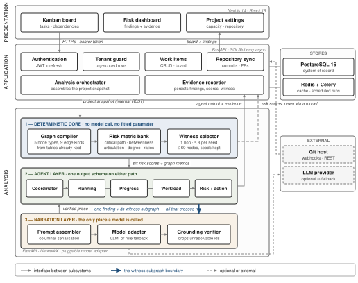

Abstract—Project-management tools report what a team has done; they rarely say what is about to go wrong, and when they do, the warning arrives without evidence a manager can check. The obvious remedy is to hand the project to a large language model and ask what is at risk. That costs tokens in proportion to project size, returns a different answer each time, and justifies itself with references that may not exist. This paper reports a system built on the opposite arrangement. Project state is compiled into a typed knowledge graph, six categories of coordination risk are computed from that graph by deterministic algorithms, and the language model is given only a bounded witness subgraph around one already-detected anomaly, with the single job of narrating it. Every citation the model produces is resolved against the node identifiers in that subgraph and discarded if it does not resolve. Across a project grown from 13 to 2,003 tasks the prompt grew 1.47× while full-dataset prompting grew to 189,834 tokens, a 487× reduction at the largest size; 200 of 200 deliberately fabricated citations were removed; and agreement between the model’s narrated verdict and the deterministic one reached Cohen’s κ = 0.95. On 270 sprints from 22 previously unseen open-source projects, the same graph projected forward flags late sprints at the halfway mark with AUC 0.792, rising to 0.874 at three-quarters. We also report what did not work: a tuned logistic model reached cross-validated F1 0.816 and fell to 0.593 on unseen projects, where the zero-parameter graph rule scored 0.712, and the mid-sprint projection ranks no better than counting unfinished work.
Index Terms—Knowledge graphs, large language models, multi-agent systems, explainable artificial intelligence, software project management, risk prediction, mining software repositories.
I. Introduction
A sprint that finishes late rarely fails for a reason nobody could see. The dependency that blocked everything was in the issue tracker. The engineer carrying three times the team’s median load was visible on the board. The component only one person had ever touched was a matter of record. The data was all there. What was missing was a reading of it, early enough and specific enough to act on.
Commercial trackers such as Jira, Linear and Asana are built to record state, and they do it well. Where they offer risk signals at all, two properties limit their usefulness. The signal arrives after the fact, computed from a snapshot rather than projected forward; and it arrives without justification, so a manager can neither act on it with confidence nor argue with it. A flag that says at risk and nothing more transfers no information a team can use.
The arrival of capable language models suggested a shortcut: serialise the project, ask the model what is going wrong, and read the answer. Having built that baseline and measured it, we think the shortcut is a poor trade for three separate reasons. Cost scales with the project, because the whole board has to enter the context window; a 2,000-task project costs roughly 190,000 prompt tokens per analysis, which rules out running the analysis on every change. Determinism is lost, because the same board can yield different verdicts on consecutive calls, and a risk score that moves when nothing moved is not a measurement. Finally, and most seriously for a tool whose output is meant to change what people do, the justification cannot be trusted: models cite issue keys and names that look exactly like real ones and are not [1].
This paper describes a system, TeamSync AI, built on the inversion of that arrangement. Here the risk is computed. Nothing infers it. Project state (people, tasks, milestones, dependencies, comments) is compiled into a typed knowledge graph, and each of six risk categories is expressed as a property of that graph: the longest path through the dependency DAG, articulation points separating a person from a component, weighted degree over assignments, the ratio of commenting to assignment, and so on. These are ordinary graph computations [2], they take milliseconds, and they give the same answer twice.
We keep the language model, but confine it. Once a risk has been computed, a witness subgraph is extracted around the nodes responsible for it: one hop, at most eight neighbours per seed, at most sixty nodes. That subgraph, and nothing else, goes into the prompt. The model’s task is to explain the finding in a sentence a manager can read, citing node identifiers. Afterwards, every identifier it cited is looked up in the subgraph it was given, and anything that fails to resolve is deleted before the output is shown. The model never sees the project, never computes the score, and cannot invent an issue key that survives to the user interface.
Three properties follow from that confinement, and each is measured in Section VIII. Prompt size stops tracking project size, because the subgraph is bounded by construction. Hallucinated evidence becomes mechanically detectable rather than a matter of trust, because the set of legitimate references is finite and known. And the system degrades cleanly: every agent has a rule-based path producing the identical output schema, so with no API key configured the product still works, which is also how every number in this paper was measured.
The contributions are:
- an architecture in which coordination risk is a deterministic graph computation and the language model is a bounded narrator, with one explicitly drawn interface between them (Sections IV–V);
- a witness-subgraph construction whose prompt cost is a function of the number of anomalies rather than of project size. We measure 1.47× prompt growth across a 154× growth in project size, and a 487× reduction against full-dataset prompting at 2,003 tasks;
- post-hoc mechanical grounding of citations against a bounded identifier set, removing 200 of 200 injected fabrications;
- an evaluation on 458,232 real Jira issues with a project-level held-out split, reporting mid-sprint early warning at AUC 0.792 and 0.874; and
- three negative results, reported in full, including a tuned model whose advantage did not survive unseen projects and a projection that ranks no better than a trivial baseline.
II. Related Work
A. Risk and effort prediction in agile projects
Predicting whether agile work will land on time is an old problem with a sobering literature. Jørgensen and Shepperd’s review of cost-estimation research [3] and Hall et al.’s review of fault-prediction performance [4] both report that reported accuracy depends heavily on evaluation design, and that results rarely transfer between contexts. Deep learning has been applied directly to story-point estimation, most prominently by Choetkiertikul et al. [5], whose Deep-SE model learns effort from issue text. A subsequent replication by Tawosi et al. [6] found that Deep-SE beat a median baseline with statistical significance in only a small minority of cases. We read that pair of papers as a caution rather than a discouragement, and it is one reason the present work reports a learned model that lost on held-out data instead of quietly dropping it. The question has not gone quiet: a 2026 evaluation across sixteen projects reports that language models given no training examples at all estimate story points better than supervised models fitted to 80% of the data [7], which is a further reason to be careful about what a tuned number on one project set is worth on another.
B. Multi-agent systems built on language models
A fast-moving body of work composes language models into cooperating agents. MetaGPT [8] assigns standard-operating-procedure roles to agents producing software artefacts; ChatDev [9] runs a simulated software company through conversational turn-taking; AutoGen [10] generalises the pattern into a conversation framework; ReAct [11] interleaves reasoning traces with tool actions; and AgentBench [12] and the surveys of Wang et al. [13] and He et al. [14] map the resulting design space, the latter specifically for software engineering. A 2026 experience report building such systems with current frameworks finds the basic components well covered and the operational ones, agent telemetry above all, still missing [15], which matches our own experience: the hardest part was not making agents talk but being able to tell, afterwards, which path produced a given output. Closer to the task studied here, Kanagamalliga et al. [16] build an interpretable multi-agent architecture for automated legal risk assessment, splitting the judgement across specialised agents so the reasoning behind a verdict can be inspected. Ramshankar et al. [17] survey how such agentic systems adapt at run time. In both, the model stays inside the decision. We put it outside. These systems share an assumption worth naming: that the model is the component that decides, and that the engineering problem is arranging its decisions well. The present work takes the opposite position for the specific task of risk detection. The decision is a graph computation and the model is kept out of it, so the comparison is architectural rather than a matter of better prompting.
C. Explainability
Post-hoc explanation methods such as LIME [18] and SHAP [19], surveyed broadly by Guidotti et al. [20] and Arrieta et al. [21], answer the question why did this model predict that?, and Jiarpakdee et al. [22] apply them specifically to defect-prediction models in software engineering; a 2026 study extends the same idea to explaining the risk of individual code changes [23]. The same instinct recurs outside software engineering. Nalinipriya et al. [24] apply explainable models to spotting threats early in large networks, on the reasoning that a warning nobody can interpret is a warning nobody acts on. They are the right tools when a learned model has made the prediction. Here they are not applicable, and the reason is structural rather than a claim of superiority: a critical-path share or an articulation point has no hidden decision to reconstruct. The explanation is the computation. What remains to be explained is only the prose, and the risk there is fabrication rather than opacity. That is why the mechanism in Section V-E is a verifier and not an attribution method.
D. Grounding generated text
Retrieval-augmented generation [25] conditions a model on retrieved passages so that its output has a documentary basis, and the surrounding literature on hallucination [1] establishes how often that basis is still embellished. Pan et al. [26] and Peng et al. [27] survey the broader union of language models and knowledge graphs, and the graph-structured retrieval built on it. That line of work has since had to confront the same failure mode from the other side: when the graph itself is imperfect, retrieval drifts and the generated text inherits the error [28]. The distinction here is one of direction and of timing: retrieval conditions generation beforehand on text, while the present system verifies generation afterwards against a computed, typed structure whose legitimate identifiers form a closed set. Conditioning makes fabrication less likely; closed-set verification makes it detectable. The two are complementary, and the second is what this paper measures.
E. Where this work sits
Interpretable agent architectures [16], [17] and explainable early-warning models [24] have been pursued separately. Neither line represents the project itself as a typed graph whose dependency, ownership and communication edges become the evidence a verdict cites. That is the gap this paper addresses. No comparator we are aware of combines all five of: specialist multi-agent decomposition; risk computed by graph algorithm rather than inferred by a model; mechanically enforced evidence grounding; a deterministic fallback emitting an identical schema; and a held-out real-world evaluation that reports its negative results.
III. What Is Claimed, and How It Is Tested
The architecture in Section IV is not interesting by itself. Plenty of systems put a graph next to a language model. The argument of this paper is narrower and falsifiable: that this particular division of labour, computing the risk and then letting the model do nothing but describe one already-computed finding, buys four properties the ordinary arrangement cannot, and costs nothing measurable in return. This section states each property in the form in which it could be shown false, names the mechanism that produces it, and points at the measurement that tests it. Table I collects them.
A. Risk is a graph invariant, not a model’s opinion
The usual pattern gives a language model the project and asks what is wrong. Here the question is never asked. Each of six coordination risks is defined as a property of a typed graph (the longest path through the dependency DAG, the articulation points separating a person from a component, weighted degree over assignments, the ratio of commenting to assignment) and computed by an ordinary graph algorithm with no fitted parameter. The model receives the answer. It never sees the question.
This is the claim everything else rests on, and it is the one most easily falsified: if the computed verdict disagreed with what a careful reader of the same data would conclude, nothing downstream would matter. It is tested twice, from opposite directions: against synthetic scenarios whose ground truth holds by construction, and against 987 real sprints where the outcome is known.
B. Prompt cost follows the number of anomalies, not the size of the project
Because the model only ever sees a witness subgraph around one anomaly, and that subgraph is bounded by construction (one hop, at most eight neighbours per seed, at most sixty nodes), the prompt stops tracking the board. The falsifiable form is a growth rate: if prompt size grew with project size, the claim fails. It does not. Across a project grown 154×, the prompt grows 1.47×.
The bound is less obvious than it looks, and we had it wrong at first. Capping the hop count alone is not enough, because one high-degree node, say a release milestone touching four hundred tasks, drags the project back into the prompt through a single hop. The per-seed cap is what makes the bound hold, and Section V-C reports the measurement that exposed it.
C. Fabricated evidence becomes decidable rather than unlikely
Grounding a model in retrieved text makes invention less likely; it does not make it checkable. Recent measurements are blunt about the residual: across frontier deep research agents, link validity stays above 94% while factual accuracy of the attributions falls between 39% and 77% [29], and the tools built to catch bad citations are themselves limited by metadata and coverage gaps [30].
The mechanism here sidesteps that problem rather than improving on it. Because the model is shown a bounded subgraph, the set of identifiers it is entitled to cite is finite and known before generation. Checking a citation is therefore a membership test against a closed set, not a judgement about plausibility. That is why the result can be stated as a guarantee instead of a rate. The falsifiable form: inject fabricated references and see whether any survives.
D. The inversion costs nothing in detection quality
A reader should suspect that confining the model this tightly must cost accuracy somewhere. The claim is that it does not, and it is tested by running both architectures over identical scenarios against identical ground truth, and by checking whether the model’s narrated severity agrees with the computed one on the same input. If the narration quietly disagreed with the computation, the system would be deciding twice and reporting once.
E. A reported failure: added complexity did not survive unseen projects
The fifth finding is not a claim in our favour and is reported because it bears directly on the four above. Three attempts to improve on the zero-parameter rule all failed: a threshold sweep, individualised due dates, and a tuned logistic model. The third failed in the most instructive way. cross-validated F1 0.816 collapsed to 0.593 on projects the model had not seen, where the rule with nothing to fit scored 0.712. A paired test cannot separate the two. We do not claim the rule predicts better. We claim the tuned advantage did not cross a project boundary, and that when two predictors cannot be separated, the one that arrives with its evidence attached is the better engineering choice.
Table I
The claims, the mechanism behind each, and where each is tested
| Claim | Mechanism | Result | § |
|---|---|---|---|
| Risk is computed | graph invariants | F1 1.00 synth. | VIII-B |
| Bounded prompt | witness subgraph | 1.47× vs 154× | VIII-A |
| Evidence decidable | closed-set check | 200/200 stripped | VIII-C |
| Nothing lost | narration only | F1 1.000; κ 0.95 | VIII-G, H |
| Complexity failed | held-out split | 0.816 → 0.593 | VIII-F |
IV. System Architecture
The deployed system is three tiers plus two stores, shown in Fig. 1. A Next.js client presents a Kanban board, a risk dashboard and project settings. A FastAPI application tier handles authentication, organisation-level tenancy, work items and repository synchronisation, and owns the system of record in PostgreSQL. A second FastAPI service performs analysis; it holds the graph machinery and is the only component that may talk to a language model.
The split between the two services is deliberate and is not merely about deployment convenience. The application tier is where data lives and where authorisation is enforced; the analysis tier is stateless, receives a project snapshot over an internal interface, and returns findings. A snapshot in, findings out means the analysis service can be run, tested and reasoned about without a database, and it is why the entire evaluation harness in Section VII can replay 987 historical sprints through exactly the code path the product uses.
Within the analysis tier the figure draws the distinction the paper is about, as three bands. The deterministic core compiles the graph, computes the risk metrics and selects the witness subgraph; it makes no model call and contains no randomness, so the same board gives the same numbers twice. The agent layer runs the coordinator and its specialists over those numbers and emits one output schema whichever path produced it. The narration layer assembles a prompt, calls a model adapter and verifies what comes back, and it is the only band that may reach a language model at all. The heavy connector between the second and third bands carries one finding and its witness subgraph, and nothing else crosses. The dashed line leaving the core shows the risk scores reaching the application tier without entering the third band: if the narration layer fails, is rate-limited, or is switched off entirely, the prose disappears and the numbers the product displays are unchanged.

V. Graph-Grounded Prompting
A. The project graph
A project snapshot is compiled into a directed multigraph over five node types (Person, Task, Milestone, Project and Component) connected by nine edge types. Assignment edges carry story points; dependency edges come from issue links; commenting edges come from the comment table; and one derived edge, Person KNOWS Component, is the composition of assignment with component membership, which is what makes single-point-of-failure analysis possible without asking anybody to maintain a skills matrix.
Every edge is derived from tables the product already keeps. No new instrumentation is introduced, nobody is asked to fill in a form, and the graph for a project of a few thousand tasks is built in single-digit milliseconds. That matters for a reason beyond efficiency: a risk analysis that requires its own data collection does not get run.
B. Risk as a graph property
Each of six risk categories is a question about the graph, with a documented threshold (Table II). None of them involves a model, and none of them involves a fitted parameter. Nor is any graph learning involved: these are classical invariants computed on the graph, not the learned node representations of a graph neural network [31], which is what makes the verdict reproducible and its explanation the computation itself. Building the graph also produced a correctness result that was not sought: the pre-existing API rejected a task that depended on itself but accepted a three-hop cycle A → B → C → A, because it only checked for direct self-loops. Once the graph exists, genuine cycle detection is a library call.
Table II
The six risk categories as graph computations
| Risk | Computation | Threshold |
|---|---|---|
| Dependency | Longest path through the BLOCKS DAG | ≥ 0.25 |
| Concentration | Betweenness centrality [32] | — |
| Knowledge | Articulation points, Person–Component | ≥ 2 tasks |
| Workload | Weighted degree over assignments | ≥ 1.50 |
| Coordination | Community structure [33], isolated members | — |
| Silent member | Comment degree ÷ assignment degree | ≥ 0.30 |
| Delay | Open tasks past due date | ≥ 0.10 |
C. The witness subgraph
When a metric fires, the nodes responsible for it become seeds, and the subgraph induced by their immediate neighbourhood becomes the witness. Three parameters bound it: one hop; at most eight neighbours per seed; at most sixty nodes in total, with seeds guaranteed to survive truncation.
The middle parameter is the one that matters, and we only learned that by getting it wrong. An earlier implementation expanded every neighbour of every seed. Real project graphs have hubs: a release milestone touching four hundred tasks, a tech lead assigned to a third of the board. One high-degree seed dragged a large fraction of the project back into the prompt, and measured prompt growth was 4.31× across the size sweep. Capping neighbours per seed brought it to 1.007×. The bound on prompt size is not a property of taking one hop; it is a property of refusing to follow a hub.
Serialisation is columnar rather than JSON. Field names appear once in a block header, for instance tasks(id,status,pts,due,title):, followed by rows. For a sixty-node witness this removes several hundred repeated key tokens, which is a mundane saving next to the subgraph bound but is free.
D. What the model is asked to do
The prompt contains one finding, its witness, and an instruction to explain the finding in prose, citing node identifiers from the witness. It does not contain the project, the other five risk categories, or the score. The model is not asked whether the finding is correct, and its answer is not used to compute anything. Section VIII-F reports how closely its narrated severity tracks the deterministic one; the point of that measurement is to confirm the model is narrating rather than quietly re-deciding.
E. Verifying the citations
After generation, each cited identifier is resolved against the identifiers present in the witness. Unresolvable citations are dropped, and if dropping them empties the evidence list the finding is still shown, with its computed score and no narration, rather than being suppressed. This is a closed-set membership test, not a plausibility judgement, which is the whole reason it can be stated as a guarantee rather than a tendency. The alternative, checking citations after the fact against the open world, is measurably hard: current detection tools are limited by reference extraction, metadata gaps and inconsistent verification [30].
One implementation detail is worth recording because it was a silent failure for some time. The verifier treated an empty list of legitimate identifiers as no filter configured rather than as nothing is legitimate, so in exactly the situation where every citation should have been rejected, every citation passed. The test that caught it injects fabricated references deliberately; the result in Section VIII-C is from that test.
VI. Multi-Agent Design
Five agents are active. A coordinator assembles the snapshot and runs three specialists concurrently. Planning reads milestones and capacity. Progress reads velocity and stalled work. Workload reads assignments and single-point-of-failure structure. A risk aggregator consumes the six computed scores, and a recommendation agent turns the aggregate into prioritised actions. Two further agents, covering meeting transcripts and chat traffic, are specified but not implemented, for the plain reason that the product has no such data source; they are listed here because omitting them from a system diagram would overstate what was built.
Every agent, on both the model path and the fallback path, emits the same structure: a summary, a severity level, a confidence, weighted signals, evidence items, recommendations, and a metadata field that records which path produced it. The uniformity is what makes the fallback honest. A caller cannot tell from the schema whether a model was involved, so no downstream code is written to depend on one, and the deterministic path is not a degraded mode bolted on afterwards. It is the reference implementation, and the configuration in which this paper’s results were produced.
VII. Experimental Setup
A. Dataset
Real-world evaluation uses TAWOS [34], a published collection of agile open-source projects drawn from twelve public Jira installations. We parsed the full dump with no parse errors and reconciled the row counts against the published totals: 39 projects, 206,162 users, 4,594 sprints, 458,232 issues, 246,587 issue links and 1,518,327 comments.
TAWOS has no due-date field, so the prediction target must be derived. A sprint is labelled delayed when at least 30% of its issues were unresolved at sprint end. This is defensible and it is a proxy; Section X treats it as the first threat to validity rather than a settled definition. Restricting to closed sprints with an end date and at least fifteen issues gives 987 eligible sprints across 31 projects, 58.8% of them positive.
B. Point-in-time reconstruction
Every issue in an archival dataset has long since been resolved. Using current status would leak the future into the prediction and produce excellent, meaningless numbers. Each sprint is therefore rebuilt as it stood at the moment of evaluation: only issues created by then exist, only issues resolved by then are complete, and the system clock is set to that moment. For the sprint-end evaluation the clock is the deadline plus one day; for the mid-sprint evaluation it is the 50% and 75% points of the sprint’s duration.
An early version of this harness set the due date equal to the evaluation time, so the condition due < now was never true and recall was 0.0 on the first run. The bug is mentioned because its symptom, a detector that fires on nothing, is much easier to notice than the opposite, and the opposite is what a leaking harness produces.
C. Splitting
Projects, not sprints, are the unit of splitting. Sprints inside one project share a team, a codebase and a set of Jira conventions; splitting by sprint would let those conventions appear on both sides of the boundary. Nine projects and 717 sprints form the tuning set; 22 projects and 270 sprints (48.9% positive) form the held-out set, which was evaluated exactly once. Checkpoints, predictor and severity cut-offs were all fixed before the held-out projects were touched.
D. Synthetic scenarios
Real data exercises one of the six risk categories. To check the implementation of the other five, 180 scenarios (90 positive and 90 negative, 30 per category) are generated with a deterministically injected anomaly, so ground truth holds by construction. These support correctness checking, a boundary sweep and the ablation, and Section VIII-B states plainly what they do and do not demonstrate.
E. Metrics
Detection quality is reported as precision, recall and F1, with accuracy included but de-emphasised given the class balance; AUC-ROC for threshold-independent ranking; and the Brier score for calibration. Paired comparisons use exact McNemar tests on the same sprints, and interval estimates use a cluster bootstrap that resamples projects with replacement over 2,000 replicates [35], matching the unit of the split. Model–rule agreement is Cohen’s κ [36], read on the Landis–Koch scale [37]. Prompt cost is reported in tokens, and latency as p50 and p95.
VIII. Results
A. Prompt cost does not follow project size
Table III and Fig. 2 give the efficiency result, measured identically for both architectures. As the project grows from 13 to 2,003 tasks, a factor of 154, the graph-grounded prompt grows from 266 to 390 tokens, a factor of 1.47. Naive full-dataset prompting grows from 1,050 to 189,834 tokens. At the largest size the ratio is 486.8×, a 99.8% reduction.
The shape of the curve matters more than the ratio. The graph-grounded series is effectively flat after a few hundred tasks, because the witness is bounded; the naive series is linear, because the board is the prompt. The practical consequence is a change in what the system can afford to do. Deterministic analysis of a 203-task project takes 10.96 ms at the median and 13.42 ms at p95 over 50 runs, which is fast enough to run on every board change, synchronously, without a job queue. Analysis that costs 190,000 tokens is something a team runs nightly, which returns us to detecting risk after it has happened.
Table III
Prompt tokens against project size
| Tasks | Graph-grounded | Naive | Ratio |
|---|---|---|---|
| 13 | 266 | 1,050 | 3.9× |
| 53 | 386 | 4,695 | 12.2× |
| 203 | 389 | 18,901 | 48.6× |
| 1,003 | 389 | 94,724 | 243.5× |
| 2,003 | 390 | 189,834 | 486.8× |
B. Implementation correctness on synthetic scenarios
On the 180 synthetic scenarios the detectors score 90 true positives, 90 true negatives and no errors of either kind, for precision, recall, F1 and accuracy of 1.00, identically across four further seeds and 1,200 additional trials.
This number should be read for what it is. Deterministic threshold code evaluated on inputs constructed to be unambiguous is expected to score perfectly; the result is equivalent to a passing test suite, and it is evidence of correct implementation, not of generalisation. The genuinely falsifiable check in this family is the boundary sweep, which asks whether each detector changes its verdict exactly where its documentation says it does. The overdue-ratio detector flips exactly at 0.10 and the silent-member detector exactly at 0.30; the workload detector’s flip is bracketed between 1.429 and 1.522 around its documented 1.50, which is the resolution the sweep can establish.
C. Grounding
Across a test corpus in which fabricated references were injected deliberately, 200 of 200 were removed, leaving no unresolvable citation in any output. The guarantee is narrow and should be stated narrowly: every surviving citation names a node that exists in the witness the model was shown. It does not follow that the surviving citation is the most relevant node, and nothing here measures whether the resulting explanation helps a manager. See Section X.
D. Mid-sprint early warning on unseen projects
This is the result that answers a question a project manager actually has, at a time when the answer can still change what they do. At each checkpoint the sprint is reconstructed as it then stood, the share of scope still unfinished at the deadline is projected from work completed against time elapsed, and delay risk is raised using the same severity cut-offs the product uses everywhere else. Nothing was tuned for this experiment. Table IV reports the 270 held-out sprints from 22 unseen projects.
Table IV
Mid-sprint early warning, 270 held-out sprints from 22 unseen projects (48.9% positive)
| Checkpoint | Predictor | Precision | Recall | F1 | Flag rate | AUC | ΔF1 vs. flag-all (95% CI) | McNemar |
|---|---|---|---|---|---|---|---|---|
| 50% | Delay risk ≠ low | 0.581 | 0.902 | 0.706 | 0.759 | 0.792 | +0.050 [+0.006, +0.094] | 52 vs. 13, p < 0.001 |
| 50% | Flag every sprint | 0.489 | 1.000 | 0.657 | 1.000 | — | — | — |
| 50% | Open-work-share baseline | — | — | — | — | 0.802 | — | — |
| 75% | Delay risk ≠ low | 0.623 | 0.962 | 0.756 | 0.756 | 0.874 | +0.099 [+0.049, +0.148] | 61 vs. 5, p < 0.001 |
| 75% | Delay risk high or worse | 0.719 | 0.909 | 0.803 | 0.619 | — | — | — |
| 75% | Flag every sprint | 0.489 | 1.000 | 0.657 | 1.000 | — | — | — |
| 75% | Open-work-share baseline | — | — | — | — | 0.881 | — | — |

Halfway through a sprint the warning carries information: it drops roughly a quarter of the sprints that a flag-everything policy would raise, while still catching 90% of those that finish late, and the paired tests separate it from that policy at both checkpoints. By three-quarters the separation is clear, with AUC 0.874.
What the table also shows, and we would rather say it than have a reviewer find it, is that the graph projection does not rank better than a trivial alternative. Simply measuring the share of work still open gives AUC 0.802 at the halfway point against the projection’s 0.792, and 0.881 against 0.874 at three-quarters. The projection earns its place in the system by being the same object that explains the risk and carries its evidence, not by ordering sprints more accurately than counting unfinished issues.
E. Sprint-end evaluation, and a learned comparator
Evaluated after the deadline on the same held-out projects (Table V), the zero-parameter graph rule reaches F1 0.712 with recall 1.000, and a tuned four-feature logistic model reaches 0.593. The cluster bootstrap puts the rule’s F1 interval at [0.610, 0.814]. Fig. 3 sets both against the story-point baseline.
Table V
Sprint-end, 270 held-out sprints
| Model | P | R | F1 | Acc | AUC |
|---|---|---|---|---|---|
| Graph rule (0 parameters) | 0.552 | 1.000 | 0.712 | 0.604 | — |
| Tuned logistic composite | 0.620 | 0.568 | 0.593 | 0.619 | 0.658 |
| Flag every sprint | 0.489 | 1.000 | 0.657 | 0.489 | — |
Two cautions belong with these numbers. The recall of 1.000 is structural: after the deadline, a delayed sprint is by definition one with unfinished work past its due date, which is exactly the condition the rule tests. It is a property of evaluating after the fact, not a skill, and its bootstrap interval of [1.000, 1.000] is correct precisely because the quantity has no variance. Not one of the 22 held-out projects produces a false negative. The mid-sprint evaluation in Section VIII-D, where the outcome is not yet determined, is where recall means something.
The second caution concerns what may be concluded about the learned model. The rule’s F1 exceeds the composite’s point estimate, but a paired test cannot separate them: exact McNemar gives p = 0.78, and the bootstrap difference is +0.119 with a 95% interval of [−0.025, +0.291] spanning zero. Against flagging every sprint, by contrast, the difference is +0.055, [+0.030, +0.080], p < 0.001, a real effect. The defensible claim is therefore not that the rule predicts better than the learned model. It is that the learned model’s tuned advantage did not survive the move to unseen projects, and that the simpler object is the one that arrives with its evidence attached.

F. Three attempts that failed
We report these because they are the evidence that the simple rule leaves no accuracy unclaimed.
1) The threshold sweep was inert.
Sweeping the overdue threshold from 0.05 to 0.50 produced byte-identical output at every value. The reason is structural: with a single shared sprint-end deadline, the overdue ratio is always exactly 0.0 or 1.0, so no threshold strictly between them can reclassify anything. A sweep that cannot change its output tests nothing. We discarded it.2) Individualised due dates made ranking worse.
Deriving per-issue deadlines from observed cycle time (2.96 days per story point) did un-collapse the signal, moving the median overdue ratio to 0.76, but AUC fell from 0.581 to 0.531. Story points are too noisy a duration proxy to carry per-issue deadlines, a finding consistent with the replication literature on story-point estimation [6].3) The learned model overfitted across project boundaries.
A four-feature logistic model with three-fold group cross-validation by project reached CV F1 0.816 and AUC 0.887, and fell to F1 0.593 and AUC 0.658 held out. Its dominant weight landed on an idle-member ratio that is mechanically coupled to the label rather than independently predictive. An AUC collapse of that size across a project boundary is the signature of fitting project-specific structure, and it is the reason this paper leads with a rule that has nothing to fit.G. Does grounding cost accuracy?
The ablation scores both architectures on identical scenarios against identical ground truth (36 scenarios, 18 positive, no failed calls). The graph-grounded path scores F1 1.000; naive full-dataset prompting scores 0.947. The per-category results are identical on five of the six. Dependency, knowledge, workload, delay and silent member all score 1.000 under both architectures, so the entire difference is coordination risk, where the naive path reaches F1 0.75 at precision 0.60. Coordination is the category that depends on the shape of the collaboration graph rather than on any single task’s attributes, which is the one place a reader of the serialised board has to infer what the graph states outright.
The comparison is deliberately tilted toward the naive baseline: tiny projects where full context is cheap and fits comfortably, a good-faith prompt defining all six categories, and lenient response parsing. Three qualifications still apply. The naive baseline is not bad. F1 0.947 is a respectable score, and it over-reports only modestly, naming 2.75 risk categories per scenario against the graph’s 2.42, with 12.1% of its claims uncorroborated. Scoring is per-target-category, so risks it reports on other dimensions are not counted against it; stricter scoring would likely widen the gap, and we do not claim it. And nothing here says anything about naive accuracy at scale, which is untested and, at 190,000 tokens per scenario, largely untestable on an ordinary budget. That limit is itself part of the argument. The mean prompts in this ablation were 1,109 tokens against 1,804, a ratio of 1.6×; the 487× figure belongs to Section VIII-A and the two should not be conflated.
H. Does the model narrate, or quietly re-decide?
The grounding guarantee would be hollow if the model were silently overriding the computed verdict. To test that, 90 live calls were made across all six categories, and the narrated severity was compared with the deterministic verdict on identical input. Cohen’s κ = 0.9533 over the 37 schema-valid responses, almost perfect agreement on the Landis–Koch scale [37], with per-category agreement of 1.00 for dependency (n = 14) and workload (n = 8), and 0.86 for knowledge (n = 12).
Schema validity needs two numbers rather than one, and we report both. Over all 90 attempted calls, 41.1% returned a valid structure. Of the 24 individually diagnosed failures, 22 were HTTP 429 rate limits from a free-tier key. That is a property of the infrastructure, not of the model. Because the run logged only those 24 failures individually, validity over calls that actually reached the model cannot be computed, only bounded: between 54% and 95%. We quote 41.1% as the measured end-to-end rate and the range as a range. The commonly convenient figure of roughly 92% assumes the optimistic extreme, and this run has no per-call record that would support it.
I. Engineering baseline
The implementation is roughly 21,000 lines. Three suites run on every push: 109 backend tests against both SQLite and PostgreSQL 16, among them a 185-check role-by-endpoint matrix; 85 analysis-service tests; and 63 frontend tests. A replay of the demonstration runs beside them, re-checking every number the demonstration script quotes. Every figure is regenerated from committed result files, so a figure cannot drift away from the evaluation that produced it.
IX. Discussion
The results support a narrower claim than the architecture might invite. What is demonstrated is that confining a language model to narration costs nothing measurable in detection quality, buys two orders of magnitude in prompt cost at realistic project sizes, and converts evidence fabrication from a hazard into a closed-set membership test. What is not demonstrated is that the graph projection is a better predictor of lateness than simple alternatives. On ranking it is not better than counting open work, and against a tuned learned model the comparison is statistically a draw.
We think that combination is the interesting finding rather than a disappointment. The field’s default assumption is that a more sophisticated model buys accuracy, and that explainability is paid for out of that accuracy. Here the sophisticated model bought nothing that survived a project boundary, while the explainable object cost nothing and arrived with the graph nodes behind its verdict. When two predictors cannot be separated statistically, the tiebreakers are the ones a practitioner actually cares about: cost, determinism, and whether the output can be checked.
The operating point deserves comment. The rule is high-sensitivity and over-flags: roughly half its sprint-end alarms are on sprints that finish on time. That is the correct trade only when a false alarm is cheap to dismiss and a miss is expensive, which is the usual shape of sprint risk but is not universal. A team drowning in alerts will ignore all of them, and no confidence interval in this paper addresses that.
Finally, a system that scores people can be used against them. It names the overloaded engineer, the silent team member, the single point of failure. The design choices here reduce but do not eliminate the risk: the output is an explanation with its evidence rather than a bare score, which at least makes a claim about a person contestable by the person. We would not deploy this as an input to performance review, and we think a paper proposing it should say so.
X. Threats to Validity
Construct. The delay label is a proxy: TAWOS has no due dates, and “at least 30% unresolved at sprint end” is a defensible choice rather than a canonical one. The sprint-end recall of 1.000 is guaranteed by that definition at that evaluation point and should not be read as predictive skill.
Internal. AUC is weak by construction at sprint level, because every task in a reconstructed sprint shares one deadline. The blocked-ratio signal never fires on this dataset, whose status vocabulary has no blocked state. At the 25% checkpoint the elapsed fraction falls below the projection’s minimum and the signal is deliberately switched off, so nothing is claimed about the first quarter of a sprint.
External. Only one of the six risk categories, delay, is validated on real data. Single-point-of-failure, cycle and coordination signals are almost entirely absent from sprint reconstruction, because issue links in TAWOS span a project’s whole history rather than one sprint; those five categories are validated synthetically, which tests implementation rather than generalisation. All data is open-source Jira, and company projects may differ.
Conclusion. The live-model sample is thin and imbalanced: κ = 0.95 rests on 37 observations with three of six categories at n = 1, from a single provider, a single model and one rate-limited key. Schema validity beyond the end-to-end rate is a bounded range, not a measurement. There is no human evaluation of explanation quality; grounding proves citations are real, not that explanations are useful. And there is no longitudinal study: no evidence is offered that a flagged risk, acted upon, changes an outcome weeks later. Two designed agents remain unimplemented.
XI. Conclusion
Asking a language model to find risk in a project is expensive, non-reproducible and unverifiable. Computing the risk from a typed graph and asking the model only to explain one finding from a bounded witness is none of those things, and this paper reports it costs nothing in detection quality to make the swap: prompt cost grows 1.47× across a 154× growth in project size, 200 of 200 fabricated citations are removed, narrated and computed verdicts agree at κ = 0.95, and on 270 sprints from 22 unseen projects the same graph warns at the halfway mark with AUC 0.792, rising to 0.874 at three-quarters.
It also reports where the approach does not win. The projection ranks no better than counting unfinished work, and a tuned learned model cannot be statistically separated from a rule with no parameters, after that model’s cross-validated F1 of 0.816 collapsed to 0.593 on projects it had not seen.
Three pieces of future work follow directly from the threats above, in order of how much they would change the conclusions: a human study of whether the grounded explanations change what managers do, which is the gap the grounding guarantee cannot close; real-world validation of the five categories currently supported only by synthetic evidence, which needs a data source with intra-sprint dependency structure; and a repeat of the live-model run on a paid key with per-call error logging, which would turn the 54–95% bound into a number.
Acknowledgment
The authors thank Saveetha Engineering College, Chennai, for the computing facilities and the departmental support that made this work possible, and the maintainers of the TAWOS dataset for releasing it under terms that permit secondary analysis of this kind.
During the preparation of this manuscript the authors used a large language model to draft and edit portions of the text. All results, figures and analyses are the authors’ own. The authors reviewed and edited the output, and take full responsibility for the content of this publication.
References
- Z. Ji et al., “Survey of hallucination in natural language generation,” ACM Comput. Surv., vol. 55, no. 12, pp. 1–38, 2023.
- A. A. Hagberg, D. A. Schult, and P. J. Swart, “Exploring network structure, dynamics, and function using NetworkX,” in Proc. 7th Python in Science Conf. (SciPy), 2008, pp. 11–15.
- M. Jørgensen and M. Shepperd, “A systematic review of software development cost estimation studies,” IEEE Trans. Softw. Eng., vol. 33, no. 1, pp. 33–53, 2007.
- T. Hall, S. Beecham, D. Bowes, D. Gray, and S. Counsell, “A systematic literature review on fault prediction performance in software engineering,” IEEE Trans. Softw. Eng., vol. 38, no. 6, pp. 1276–1304, 2012.
- M. Choetkiertikul, H. K. Dam, T. Tran, T. Pham, A. Ghose, and T. Menzies, “A deep learning model for estimating story points,” IEEE Trans. Softw. Eng., vol. 45, no. 7, pp. 637–656, 2019.
- V. Tawosi, R. Moussa, and F. Sarro, “Agile effort estimation: Have we solved the problem yet? Insights from a replication study,” IEEE Trans. Softw. Eng., 2023, doi: 10.1109/TSE.2022.3228739.
- P. P. Shetty, A. Balakrishnan, M. Xu, X. Xi, and Z. Yu, “Story point estimation using large language models,” 2026, arXiv:2603.06276.
- S. Hong et al., “MetaGPT: Meta programming for a multi-agent collaborative framework,” in Proc. Int. Conf. Learning Representations (ICLR), 2024, arXiv:2308.00352.
- C. Qian et al., “ChatDev: Communicative agents for software development,” in Proc. 62nd Annu. Meeting Assoc. Computational Linguistics (ACL), 2024, pp. 15174–15186, arXiv:2307.07924.
- Q. Wu et al., “AutoGen: Enabling next-gen LLM applications via multi-agent conversation,” 2023, arXiv:2308.08155.
- S. Yao et al., “ReAct: Synergizing reasoning and acting in language models,” in Proc. Int. Conf. Learning Representations (ICLR), 2023, arXiv:2210.03629.
- X. Liu et al., “AgentBench: Evaluating LLMs as agents,” in Proc. Int. Conf. Learning Representations (ICLR), 2024, arXiv:2308.03688.
- L. Wang et al., “A survey on large language model based autonomous agents,” Front. Comput. Sci., vol. 18, no. 6, art. 186345, 2024, doi: 10.1007/s11704-024-40231-1.
- J. He, C. Treude, and D. Lo, “LLM-based multi-agent systems for software engineering: Literature review, vision and the road ahead,” ACM Trans. Softw. Eng. Methodol., vol. 34, no. 5, pp. 1–30, 2025, doi: 10.1145/3712003.
- M. C. S. De Oliveira, M. O. Ibiyo, M. Gianrusso, C. Di Sipio, D. Di Ruscio, and P. T. Nguyen, “Developing LLM-based multi-agent systems in software engineering: A mixed-method experience report,” 2026, arXiv:2608.11965.
- S. Kanagamalliga, P. Vinayagam, R. Rehan Naveid, and B. Dhanu Dharvin, “An interpretable multi agent architecture for automated legal risk assessment,” in Proc. 7th Int. Conf. Innovative Data Communication Technologies and Application (ICIDCA), 2025, pp. 1449–1454, doi: 10.1109/ICIDCA66325.2025.11280370.
- N. Ramshankar et al., “Key methods of adaptation in agentic AI system,” in Agentic Artificial Intelligence. Berlin, Germany: De Gruyter, 2026, ch. 10, doi: 10.1515/9783112223062-010.
- M. T. Ribeiro, S. Singh, and C. Guestrin, “‘Why should I trust you?’: Explaining the predictions of any classifier,” in Proc. 22nd ACM SIGKDD Int. Conf. Knowledge Discovery and Data Mining (KDD), 2016, pp. 1135–1144.
- S. M. Lundberg and S.-I. Lee, “A unified approach to interpreting model predictions,” in Advances in Neural Information Processing Systems (NeurIPS), vol. 30, 2017, pp. 4765–4774.
- R. Guidotti, A. Monreale, S. Ruggieri, F. Turini, F. Giannotti, and D. Pedreschi, “A survey of methods for explaining black box models,” ACM Comput. Surv., vol. 51, no. 5, pp. 1–42, 2018.
- A. B. Arrieta et al., “Explainable artificial intelligence (XAI): Concepts, taxonomies, opportunities and challenges toward responsible AI,” Inf. Fusion, vol. 58, pp. 82–115, 2020.
- J. Jiarpakdee, C. Tantithamthavorn, H. K. Dam, and J. Grundy, “An empirical study of model-agnostic techniques for defect prediction models,” IEEE Trans. Softw. Eng., vol. 48, no. 1, pp. 166–185, 2022.
- Y. Liu et al., “A preliminary study on explaining risk of code changes using LLM-based prediction models,” 2026, arXiv:2607.02782.
- G. Nalinipriya, S. Rama Sree, K. Radhika, E. Laxmi Lydia, F. K. Karim, M. K. Ishak, and S. M. Mostafa, “Leveraging explainable artificial intelligence for early detection and mitigation of cyber threat in large-scale network environments,” Scientific Reports, vol. 15, art. 24662, 2025, doi: 10.1038/s41598-025-08597-9.
- P. Lewis et al., “Retrieval-augmented generation for knowledge-intensive NLP tasks,” in Advances in Neural Information Processing Systems (NeurIPS), vol. 33, 2020, pp. 9459–9474.
- S. Pan, L. Luo, Y. Wang, C. Chen, J. Wang, and X. Wu, “Unifying large language models and knowledge graphs: A roadmap,” IEEE Trans. Knowl. Data Eng., vol. 36, no. 7, pp. 3580–3599, 2024.
- B. Peng, Y. Zhu, Y. Liu, X. Bo, H. Shi, C. Hong, Y. Zhang, and S. Tang, “Graph retrieval-augmented generation: A survey,” ACM Trans. Inf. Syst., 2025, doi: 10.1145/3777378.
- Y. Ma, J. Xu, T. Wen, Q. Chen, J. Li, R. Wang, M. Li, S. Liang, and K. Qin, “Toward robust GraphRAG: Mitigating retrieval drift and hallucination from imperfect knowledge graphs,” 2026, arXiv:2603.14828.
- H. Onweller, E. Lumer, A. Huber, P. Ramchandani, V. K. Subbiah, and C. Feld, “Cited but not verified: Parsing and evaluating source attribution in LLM deep research agents,” 2026, arXiv:2605.06635.
- F. Badalova and P. Mayr, “Detecting hallucinated and suspicious citations: What current tools can and cannot do,” 2026, arXiv:2607.22693.
- J. Zhou et al., “Graph neural networks: A review of methods and applications,” AI Open, vol. 1, pp. 57–81, 2020.
- U. Brandes, “A faster algorithm for betweenness centrality,” J. Math. Sociol., vol. 25, no. 2, pp. 163–177, 2001.
- V. D. Blondel, J.-L. Guillaume, R. Lambiotte, and E. Lefebvre, “Fast unfolding of communities in large networks,” J. Stat. Mech.: Theory Exp., vol. 2008, no. 10, P10008, 2008.
- V. Tawosi, A. Al-Subaihin, R. Moussa, and F. Sarro, “A versatile dataset of agile open source software projects,” in Proc. 19th Int. Conf. Mining Software Repositories (MSR), 2022, pp. 420–424, doi: 10.1145/3524842.3528029.
- B. Efron, “Bootstrap methods: Another look at the jackknife,” Ann. Statist., vol. 7, no. 1, pp. 1–26, 1979.
- J. Cohen, “A coefficient of agreement for nominal scales,” Educ. Psychol. Meas., vol. 20, no. 1, pp. 37–46, 1960.
- J. R. Landis and G. G. Koch, “The measurement of observer agreement for categorical data,” Biometrics, vol. 33, no. 1, pp. 159–174, 1977.